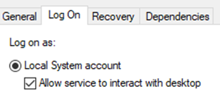

First, setup your [LastInitial][FirstName]DC1 virtual machine using the steps from the previous guides
REMINDER, DO NOT CHANGE YOUR AZURE HOST VM DNS OR IP ADDRESS SETTINGS UNDER ANY CIRCUMSTANCES, EVEN IF YOU THINK YOUR INSTRUCTOR TOLD YOU TO DO IT.
* USE THE AZURE HOST VM FOR THE PROJECT
INSTALLING AND SETTING UP DC1
- Install and set up your LastnameinitialFirstnameDC1 virtual machine by following the instructions in the Creating a Hyper-V VM and Installing Server 2019 Combined within the Windows Server 2019 Reference Materials module.
- Set up the network by following the instructions in the Azure VM Network Setup, which is in the Windows Server 2019 Reference Materials module.
- Test your internet connectivity by opening a website using the internet browser.
ADDING A SECOND DISK
- On Azure VM's Hyper-V Manager, select the DC1 VM, click on Settings in the Actions pane.
- Select SCSI Controller and add a hard drive.
- Create a new virtual disk with 20 GB.
- Repeat for other VMs as needed.
INITIALIZATION OF SECOND DISK
- Press Windows Key + R, enter “diskmgmt.msc” and click run.
- Locate and right click on Disk 1, click Online.
- Right click Disk 1 again and Initialize Disk.
- Make sure Disk 1, and MBR are both selected. Choose OK
- Right click the box right of Disk 1 and click “New Simple Volume”
- On the Format Partition page, give the storage a new name or click next, then click Finish.
Note: Drive letter can be either D or E.
- Repeat for other VMs as needed.
SETTING UP THE NETWORK-BASED INSTALLATION (ON DC1)
Add the DHCP RoleAdd the Windows Deployment Service role- Within Server Manager, select the Manage menu and then click Add Roles and Features.
- At the Installation Type page, click Next.
- At the Server Selection page, click Next.
- At the Server roles page, select DHCP Server, click Add Features when prompted.
- At the Server roles page, select Windows Deployment Service, click Add Features when prompted.
- Continue clicking the Next button until you hit Install option.
- Make sure to Complete DHCP the configuration before closing the role wizard.
- Create a new DHCP scope, called Internal Network, with a Start IP address of 172.16.0.50 and an End IP address of 172.16.0.100. Hint: Tools menu and create the scope using IPv4 options.
- At the Configure DHCP Options page, select No, I will configure these options later.
- Activate the scope.
Using the Software folder on the Host Azure VM’s Desktop. Mount the Windows 2019 Server ISO to the DC1 VM.- Within Server Manager of DC1, configure your server under Windows Deployment Service. Hint: Tools menu and configure your DC1.
- At the Install Options page, select Standalone server and click Next.
- At the Remote Installation Folder Location page, create a folder on the newly created second disk
D:\ drive with the name RemoteInstall and choose that as its location. Click Yes when prompted.
- At the PXE Server Initial Settings page, select Respond to all client computers (known and unknown).
- Still in the Windows Deployment Services window, expand the DC1, right-click Boot Images under your server and click Add Boot Image.
- Navigate to the mounted iso, go to the \sources folder, and select the boot.wim file.
- In the Windows Deployment Services window, right-click Install Images under your server and click Add Install Image.
- Use the default image group name.
- Go to \sources folder again, and select the install.wim file.
- Start your server in the WDS window. Hint: Locate the All Tasks option of DC1 within this window.
-
-
CREATE DM1 A NEW VIRTUAL MACHINE FOR WDS
- Create a new Virtual Machine named
[LastInitial][FirstName]DC1 "LastnameintialFirstnameDM1" on your Azure host, following only the first half of the guide (do not install windows).
Make sure that the virtual machine is on the D: Drive- At the Installation Options page, select Install an operating system from a network-based installation server.
In Hyper-V, select the child VM, click on Settings on the right column.
Select SCSI Controller and add an additional 20 GB (D drive).
- Add a second disk with 20 GB. (see above for instructions when needed). An error may show up indicating "Failed to create the virtual hard disk", this is because DC1 is using the same virtual disk file name. Provide a different name (i.e. New Virtual Hard Disk for DM1.vhdx) to fix it.
- Start and connect to your DM1 virtual machine and wait for the prompt to press F12 on your keyboard, this will start the installation process.
- If the DHCP times out, here are some possible solutions:
- You may have forgotten to complete the DHCP configuration.
- You may have forgotten to activate the DHCP scope.
- You may have forgotten to start the WDS server.
- If you already made DC1 into a domain controller, you will need to authorize the WDS server inside of the WDS window.
- If the DHCP or WDS roles on your DC1 say they are corrupt, remove the roles and re-add them to solve the issue.
- After selecting the locale and keyboard input method, click next and you should be prompted to provide a valid username and password for an account on the WDS server.
*** Important: Take a screenshot; it is needed to be included in the template ***
Supply the computer and user name of your DM1 like so: dm1_vm_name\dm1_admin_username dc1 name\dc1 username (i.e. SJaneDC1\administrator) and the password Secret555.
- Initialize the second disk. (see above for instructions when needed)
The rest of the installation should be standard following the guide.- Proceed with the installation similar to installing and setting up DC1 (see above for instructions when needed).
CONFIGURING DOMAIN CONTROLLER SERVER (ON DC1)
Add the Active Directory Domain Services role.- Within Server Manager, select the Manage menu and then click Add Roles and Features.
- At the Installation Type page of the wizard, click Next.
- At the Server Selection page, click Next.
- At the Server Roles page, select Active Directory Domain Services.
- Continue clicking the Next button until you see the Install button.
- On the Confirm installation selections page, click Install to install the files needed for Active Directory Domain Services. Do not close the wizard when the installation is finished.
- Click Promote this server to a domain controller to start the Active Directory Domain Services Configuration Wizard.
- Select Add a new forest, In the Root domain name text box, type
YourLastNameProject.local LastnameProject.com (i.e. SmithProject.com). Note that this is your domain name.
- Select a Forest functional level of Windows Server 2008, and a Domain functional level of Windows Server 2008.
- Type Secret555 for the Password.
- At the Additional Options page, note the NetBIOS name of your domain and click Next.
- At the Paths page, note the default folders displayed and click Next.
- At the Review Options page, click Next.
- At the Prerequisites Check page, click Install. Your computer will reboot following installation.
- After your DC1 has restarted, you will notice that the logon screen shows the domain name \ username. Type Secret555 in the Password to sign in. If it does not show the domain name\ username, you may need to log into
YourLastNameProject.local it by using “YourLastNameProject\Administrator” LastnameProject\username (i.e. SmithProject\administrator). as the username
- At this point of the project, the DC1 is now the domain controller and has a domain of "LastnameProject.com" (i.e. SmithProject.com). To verify, open the Server Manager, select the Local Server on the left-hand side, and check the Domain text box.
- Within Server Manager, go to Local Server, and then right-click the hyperlink next to your network interface or Ethernet to view the network settings.
In the Network Interfaces properties Select Properties from the drop-down list, go to Internet Protocol Version 4 (TCP/IPv4) and click Properties. Note that the Preferred DNS server has been set to 127.0.0.1, add the Azure Hosts IP address as secondary DNS, which is a loop back address. It means the IP address points to itself and the DC1 is now the DNS server.
ADDING DM1 TO THE DOMAIN
- On Azure VM, select the DM1, then click Settings on the Actions pane.
- Click the BIOS, and change the Startup order to move the Legacy Network adapter to be the last.
- Start and connect to DM1.
- On Server Manager DM1, select the Local Server and open the network settings to
change the Preferred DNS Server settings to the IP of DC1 with the IP address of DC1. and move the current one to Alternate. move the current IP address listed as Preferred DNS to Alternate DNS. On the Preferred DNS, type the IP address of the DC1. Close the window.
- At this point of the project, DM1 uses DC1 as the DNS server.
- On Server Manager (DM1), under Local Server on the left pane, select WORKGROUP then click Change and select Domain circle and enter in
YourLastNameProject.local LastnameProject.com
- For the login prompt, it should be Administrator and Secret555 and afterwards it should show Welcome to YourLastNameProject.local domain message box. Restart when prompted.
CREATE A SERVER GROUP
- Turn off the Windows Defender Firewall (Public, Private, and Domain network settings) on both DC1 and DM1.
- In DM1, open services.msc
in DM1 and scroll down until you see Virtual Disk, right-click and select Properties
- For Startup type drop-down, choose Automatic then select Log On on the tabs at the top and make sure you select Allow service to interact with desktop. Now you may start the service.

- In the DC1 Server Manager Dashboard, click 4 Create a server group
- On the Server group name textbox, enter "FirstnameServerGroup" (i.e. JaneServerGroup).
- On the tabs, select Active Directory, click Find Now (both VMs should populate).
- Select both DM1 and DC1 vm to add it to the group. Both vm should appear in the Selected area. Click OK.
Input an appropriate name for the group. - At this point of the project, DC1 and DM1 are part of the server group. The server group should appear on the left-hand side pane of the Server Manager.
HOW TO ACCESS DISK MANAGEMENT OF THE DM1 FROM DC1
- In Server Manager, click on your server group on the left-hand pane.
- Right-click on DM1 and select Computer Management. (DM1 must be running).
- In computer management, click disk management to access the drives in DM1.
- If it is giving you an error saying “The RPC Server is Unavailable”, follow these steps
- Open Windows Powershell as admin and run the following command on both DC1 and DM1.
netsh advfirewall firewall set rule group="Remote Volume Management" new enable=yes
- If no errors occur, disk management should load after you click on it.
- At this point, you can view, configure, and manage the DM1 from DC1. The domain controller (DC) has full access to the domain member (DM). Both are members of the "LastnameProject.com" (i.e. SmithProject.com) domain and members of the "FirstnameServerGroup" (i.e. JaneServerGroup) server group.
Updated: September 19, 2024